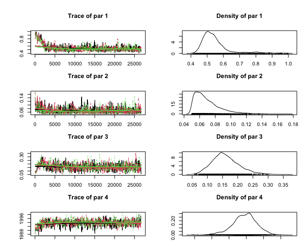
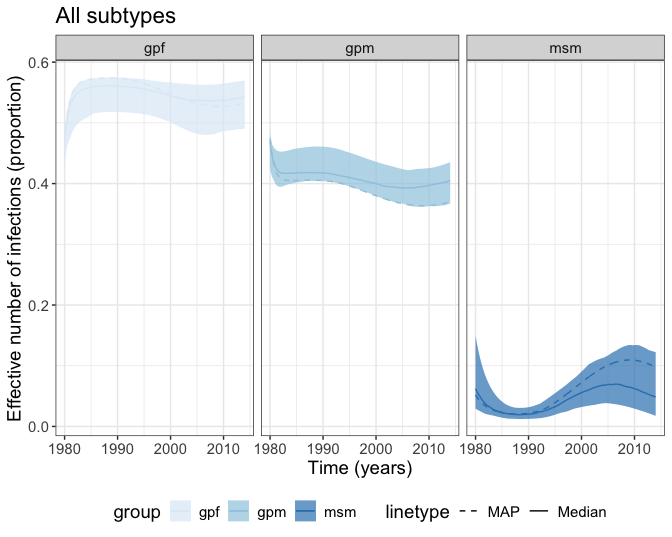

HIV Senegal Model
Fabricia F. Nascimento
2024-10-08
Source:vignettes/SenegalHIVmodel.Rmd
SenegalHIVmodel.RmdIntroduction
This vignette will demonstrate how we estimated transmission rates using HIV genetic sequences from Senegal. This also provides a guidance on how analysis described in Nascimento et al. 2020 was carried out.We analysed HIV-1 sequences from subtypes B, C and 02_AG.
Here we will provide a snapshot of these analyses.
Basic requirements
This vignette assumes that you know the basics of R and have the following packages already installed:
- ape: for phylogenetic trees;
- akima: necessary for interpolation of data (used for the calculation of the likelihood by the phydynR package);
- BayesianTools: package for Bayesian inference;
- CODA: is a series of tools to analze the output of Markov chain Monte Carlo;
- devtools: useful for installing packages directly from github repository;
- phydynR: implements the coalescent simulation and likelihood function for phylodynamic analysis;
- treedater: fits a molecular clock to a phylogenetic tree.
- senegalHIVmodel: contains the example data to run the analysis described in this tutorial.
The Model
The model we fit is based on the structured coalescent models (Volz 2012). These models are used to estimate epidemiological parameters using a phylogenetic tree and information on states of each tip of the tree. These states are discrete-trait information representing each sequences.
In our mathematical model we have 4 different discrete-traits associated to each genetic sequence:
- \(gpf\) = HIV sample from the general population – females;
- \(gpm\) = HIV sample from the general population – males;
- \(msm\) = HIV sample from men that have sex with other men;
- \(src\) = source sample, which are HIV samples from individuals who are from other countries and not from Senegal.
Stage of infection
We fit the HIV epidemic in Senegal using ordinary differential equations (ODE) and only 1 stage of infection. This means that infected individuals would die and not recover from the infection. In our model we represented it as \(\gamma\) rate. We used 1 stage of infection, because the metadata available for the Senegal sequences did not have information that we could use to determine the stage of HIV infection at the time the samples were collected.
How transmissions were modelled?
- An infected \(msm\) (\(I_{msm}\)) could transmit to another \(msm\) with probability \(p_{msm2msm}\)
- An infected \(msm\) (\(I_{msm}\)) could transmit to a \(gpf\) with probability \((1 - p_{msm2msm})\)
- An infected \(gpf\) (\(I_{gpf}\)) could transmit to a \(gpm\) with probability \(p_{gpf2gpm}\)
- An infected \(gpf\) (\(I_{gpf}\)) could transmit to a \(msm\) with probability \((1 - p_{gpf2gpm})\)
- An infected \(gpm\) could also transmit to a \(gpf\). For this event, we used the risk ratio of a male to transmit to a female, and fixed it to \(1.02\). This is the parameter \(male_{x}\) of our model.
See Figure 1 for a schematic representation of the transmission model for HIV in Senegal. In this figure \(gpf\), \(gpm\) and \(msm\) represent the infected individuals.
Figure 1: Transmission model for HIV in Senegal. \(gpf\), \(gpm\) and \(msm\) represent infected individuals.
How about HIV incidence rate?
We also modeled the HIV incidence rate as a function of time (\(t\)) in \(msm\) and the \(gp\) (general population) as different spline functions (Eilers and Marx 1996), that in our ODEs are represented by \(\lambda(t)\) and \(\mu(t)\), respectively.
The \(source\) compartment
Finally, to model the HIV epidemic in Senegal, we also added an additional compartment named “source” (\(src\)), that represents the rate in which HIV lineages are imported to Senegal from other countries. We modeled this as a constant effective population size rate with two parameters to be estimated – \(srcNe\): the effective source population size; and the \(import\) rate. Because the number of imported HIV balances the number of exported HIV, the infected \(src\) individuals along time are not represented in the ODEs.
The ODEs or mathematical model equations
Based on Figure 1 and the parameters we would like to estimate, the ordinary differential equations (ODEs) of our model are:
\(\dot{I}_{gpf} = male_x \mu(t) I_{gpm} + (1 - p_{msm2msm}) \lambda(t) I_{msm} - \gamma I_{gpf}\)
\(\dot{I}_{gpm} = p_{gpf2gpm} \mu(t) I_{gpf} - \gamma I_{gpm}\)
\(\dot{I}_{msm} = (1 - p_{gpf2gpm}) \mu(t) I_{gpf} + p_{msm2msm} \lambda(t) I_{msm} - \gamma I_{msm}\)
For a publication, you should choose mathematical symbols such as \(\phi\), or \(p\), etc to make your equations nicer. However, for simplicity and to make it easier to understand the meaning of the parameters, we will keep the values as it is, such as \(p_{gpf2gpm}\), etc.
How to express the mathematical model in R?
In our model, we are interested in HIV transmissions in the \(gp\) and in the \(msm\) risk group. But also remember that we have to consider the imported HIV, which is in the \(src\) compartment. Based on that, \(gpf\), \(gpm\), \(msm\), and \(src\) are the demes of our model, and are represented as a vector in R as:
demes <- c("gpm", "gpf", "msm", "src")Because we use spline functions to determine the shape of the curve for the
transmission rates in \(gp\) and \(msm\), we should provide the initial T0 and
final T1 times for our simulations.
T0 <- 1978
T1 <- 2014We can also go ahead and set the value for the stage of infection, that in our model is just one stage. We assume we know this value.
GAMMA <- 1/10We should also create a list to set up a template for the parameter values of our model. You can set this to values that you think are appropriate. Remember that the majority of parameter values in this list will be estimated. In R, this list of parameter values can be created as below:
THETA <- list(
gpsp0 = 6/10,
gpsp1 = 4/10,
gpsp2 = 1/10,
gpsploc = 1987,
msmsp0 = 4/10,
msmsp1 = 4/10,
msmsp2 = 2/10,
msmsploc = 1995,
maleX = 1.02,
import = 1/20,
srcNe = 20,
gpspline = function( t, parms ){
if (t < T0 ) return( parms$gpsp0 )
if (t > T1) return (parms$gpsp2)
with(parms, pmax(0.025, approx( x = c(T0, gpsploc, T1), y=c(gpsp0, gpsp1, gpsp2) , xout = t, rule = 2)$y) )
},
msmspline = function( t, parms){
if (t < T0 ) return( parms$msmsp0 )
if (t > T1) return ( parms$msmsp2 )
with(parms, pmax(0.025, approx( x = c(T0, msmsploc, T1), y=c(msmsp0, msmsp1, msmsp2) , xout = t, rule = 2)$y) )
},
pmsm2msm = 0.85,
pgpf2gpm = 0.85,
initmsm = 1,
initgp = 1
)Note that parameters \(gpsp0\), \(gpsp1\), \(gpsp2\), and \(gpsploc\) are necessary to estimate the flexible piecewise linear function for the \(gp\) (\(gpspline\) in R or \(\mu(t)\) in the ODEs). And parameters \(msmsp0\), \(msmsp1\), \(msmsp2\), \(msmsploc\) are necessary to estimate the flexible piecewise linear function for the \(msm\) risk group (\(msmspline\) in R or \(\lambda(t)\) in the ODEs).
| Parameter | Symbol in R | Initial values |
|---|---|---|
| Transmission rate gp0 | gpsp0 | 6/10 |
| Transmission rate gp1 | gpsp1 | 4/10 |
| Transmission rate gp2 | gpsp2 | 1/10 |
| Time interval for gp | gpsploc | 1987 |
| Transmission rate msm0 | msmsp0 | 4/10 |
| Transmission rate msm1 | msmsp1 | 4/10 |
| Transmission rate msm2 | msmsp2 | 2/10 |
| Time interval for msm | msmsploc | 1995 |
| Infectiouness ratio from male to female | maleX | 1.2 |
| Importation rate | import | 1.20 |
| Effective population size of src | srcNe | 1.10 |
| Probability of infected msm to infect another msm | pmsm2msm | 0.85 |
| Probability of infected gpf to infect a gpm | pgpf2gpm | 0.85 |
| Initial number of infected msm | initmsm | 1.0 |
| Initial number of infected gp | initgp | 1.0 |
We also need to setup some initial conditions of our model. We should set an arbitrary large number for the \(src\) population.
SRCSIZE <<- 1e5
X0 <- c(gpm = unname(THETA$initgp/2),
gpf = unname(THETA$initgp/2),
msm = unname(THETA$initmsm),
src = SRCSIZE)Setting up the birth, migration and death rates
The calculation of births and migrations of our model are expressed as 4 \(\times\) 4 matrices, which represent a transmission or movement from one deme to another deme. Lineages also die at a same rate.
First, we have to setup the components of the model. This can be done using the setup.model.equations function in this research compendium.
eqns <- senegalHIVmodel::setup.model.equations(demes)
attach(eqns)Setting up the birth matrix
We should set up the birth matrix to allow transmissions from one deme to another deme as in Figure 1 .
| gpm | gpf | msm | src | |
|---|---|---|---|---|
| gpm |
|
\(gpm \to gpf\) |
|
|
| gpf | \(gpf \to gpm\) |
|
\(gpf \to msm\) |
|
| msm |
|
\(msm \to gpf\) | \(msm \to msm\) |
|
| src |
|
|
|
\(src \to src\) |
To set up these transmissions between demes, each element in the matrix is a string that will be passed as R code.
births['msm', 'msm'] <- "parms$msmspline(t, parms) * msm * parms$pmsm2msm"
births['msm', 'gpf'] <- "parms$msmspline(t, parms) * msm * (1-parms$pmsm2msm)"
births['gpm', 'gpf'] <- "parms$gpspline(t, parms) * gpm * parms$maleX"
births['gpf', 'gpm'] <- "parms$gpspline(t, parms) * gpf * parms$pgpf2gpm"
births['gpf', 'msm'] <- "parms$gpspline(t, parms) * gpf * (1-parms$pgpf2gpm)"
# f = (1/2)*(Y^2)/Ne
births['src', 'src'] <- "0.5 * SRCSIZE^2 / parms$srcNe"Setting up the migration matrix
Similar to the birth matrix, we also allow migrations from \(gpf\), \(gpm\), or \(msm\) to the \(src\); and from \(src\) to \(gpf\), \(gpm\), or \(msm\). This is modelled as a constant effective population size.
| gpm | gpf | msm | src | |
|---|---|---|---|---|
| gpm |
|
|
|
\(gpm \to src\) |
| gpf |
|
|
|
\(gpf \to src\) |
| msm |
|
|
|
\(msm \to src\) |
| src | \(src \to gpm\) | \(src \to gpf\) | \(src \to msm\) |
|
We also set up migrations between demes where each element in the matrix is a string that will be passed as R code.
migs['src', 'gpm'] <- "parms$import * gpm"
migs['src', 'gpf'] <- "parms$import * gpf"
migs['src', 'msm'] <- "parms$import * msm"
migs['gpm', 'src'] <- "parms$import * gpm"
migs['gpf', 'src'] <- "parms$import * gpf"
migs['msm', 'src'] <- "parms$import * msm"Setting up the vector for the death rates
Similarly to the birth and migration matrices, we also set up death rates where each element is a string that will be passed as R code.
deaths['msm'] <- "GAMMA * msm"
deaths['gpf'] <- "GAMMA * gpf"
deaths['gpm'] <- "GAMMA * gpm"
deaths['src'] <- "0.5 * SRCSIZE^2 / parms$srcNe"The demographic model
After setting up all the components of the mathematical model, we can build the
demographic process using the function build.demographic.process from the
phydynR package. The dm output can be used as input to coalescent models
for the calculation of the likelihood, when fitting the model using a
Markov chain Monte Carlo (MCMC), for example.
dm <- build.demographic.process(births = births,
deaths = deaths,
migrations = migs,
parameterNames = names(THETA),
rcpp = FALSE,
sde = FALSE)For more information on the the input data for the build.demographic.process
function, you should see its R documentation using the command
?phydynR::build.demographic.process.
Load additional data
After setting up all the equations of the model in a way that R can understand, the model can now be fitted to a binary and dated phylogenetic tree. In our specific case, we estimated a maximum likelihood trees using RAxML-NG for each subtype, as we analyzed HIV-1 subtypes B, C and 02_AG.
Each tree had a relaxed clock fitted using the R package treedater. After that, the trees were merged into a single tree using the R script merge_trees.R. The final tree did not contain sequences from children, and from which risk group or sex was NA (not available).
We load the binary dated tree in R using the following:
tree.all <- read.tree(
system.file("data/bindTree_CGR_GTR+Gp12+3_droppedTip.tre",
package = "senegalHIVmodel"))After, we should load all the information for the metadata. This aims to create a discrete-trait data for all tips in the phylogenetic tree. Remember that our discrete-trait data in this model are the gpf, gpm, msm, and src.
First we need to read in R all metadata as below:
# Metadata that will be used in our model for the CGR (close global reference)
# sequences and for sequences from Senegal.
# CGRs are referred in the mathematical model as src (source) data
# src are HIV sequences that are from other countries and not from Senegal
# the 1st column is the sequence names
# the 2nd column is the state (gpf, gpm, msm, or src) of each sequence
all_data <- readRDS(system.file("data/states.RDS", package = "senegalHIVmodel"))After organizing all metadata, we further organize it in a way that the R package phydynR will understand it.
For that, we create a matrix to receive the information on states (discrete-traits) for each tip of the tree
gpm <- gpf <- msm <- src <- rep(0, length(tree.all$tip.label))
# Adds 1 to where states matches "gpm", and so on.
gpm[all_data$States == "gpm"] <- 1
gpf[all_data$States == "gpf"] <- 1
msm[all_data$States == "msm"] <- 1
src[all_data$States == "src"] <- 1
sampleStates <- cbind(gpm, gpf, msm, src)
rownames(sampleStates) <- all_data$tip.nameNow, we need to read the estimated times (in calendar units) for each sequence in the phylogenetic tree
times <- readRDS(
system.file("data/bindTree_CGR_GTR+Gp12+3_droppedTip_sts.RDS",
package = "senegalHIVmodel"))Finally, we can create an an object of DatedTree [phydynR package]. This is
the tree that should be used in the calculation of the likelihood to estimate
parameter values using phydynR
dated.tree <- phydynR::DatedTree(phylo = tree.all,
sampleTimes = times,
sampleStates = sampleStates,
minEdgeLength = 2/52,
tol = 0.1)Calculation of the likelihood
After setting up the mathematical model and the data, we have the following:
-
dated.tree= a phylogenetic tree of class DatedTree -
THETA= template for parameter values -
dm= the demographic process -
X0= initial conditions
The above objects will be used in the calculation of the likelihood using the
phydynR::colik function.
phydynR::colik(tree = dated.tree,
theta = THETA,
demographic.process.model = dm,
x0 = X0,
t0 = 1978,
res = 1e3,
timeOfOriginBoundaryCondition = FALSE,
AgtY_penalty = 1,
maxHeight = 35)Note that for the calculation of the likelihood you can provide a value for
maximum height maxHeight. This parameter “tells” the function up to which point
back in time the calculation of the likelihood should be done. If computer
resources are not a problem, you can leave this as the default. Using the
whole tree for the calculation of the likelihood can make it slower than
when using just a portion back in time.
For the Senegal data, we used a maxHeight = 35. This means that it will go back
in time in the tree at approximately 1979. This was merely chosen to put the
HIV epidemics in Senegal around this time, for estimation of the parameters in
our model.
Estimation of epidemiological parameters
Now that we are happy with everything, we are ready to estimate the parameters of our model. For the Senegal HIV model, we chose to estimate the parameters using a Markov chain Monte Carlo (MCMC) as implemented in the R package BayesianTools.
Which parameters to estimate?
For this example, we decided to estimate the following parameters:
Parameters for estimating the spline function for the gp:
- gpsp0
- gpsp1
- gpsp2
- gpsploc
Parameters for estimating the spline function for the msm:
- msmsp0
- msmsp1
- msmsp2
- msmsploc
Parameters that controls the src:
- import
- srcNe
Probability of certain events to occur:
- pmsm2msm
- pgpf2gpm
- maleX
Parameters to estimate the initial population size:
- initmsm (initial number of individuals in the msm population)
- initgp (initial number of individuals in the gp population)
Estimating the parameters
To estimate these parameters we should set up an object function. This object function will receive the proposals of the MCMC. The reason of using an object function is to make it easier to change the values of the parameters to be estimated in THETA (our parameter template as explained before). Note that not all parameters listed in THETA will be estimated; some will stay fixed to the predifined values.
obj_fun <- function(parameters){
# we use unname here because "parameters" can be as vectors or matrix, and
# sometimes it comes with column names, which I chose to remove these column names
# in here.
parameters <- unname(parameters)
# add the values of THETA to a new variable named THETA.new
THETA.new <- THETA
# change the values in THETA.new to the new proposals that will be evaluated
THETA.new$gpsp0 <- parameters[1]
THETA.new$gpsp1 <- parameters[2]
THETA.new$gpsp2 <- parameters[3]
THETA.new$gpsploc <- parameters[4]
THETA.new$msmsp0 <- parameters[5]
THETA.new$msmsp1 <- parameters[6]
THETA.new$msmsp2 <- parameters[7]
THETA.new$msmsploc <- parameters[8]
THETA.new$maleX <- parameters[9]
THETA.new$import <- parameters[10]
THETA.new$srcNe <- parameters[11]
THETA.new$pmsm2msm <- parameters[12]
THETA.new$pgpf2gpm <- parameters[13]
THETA.new$initmsm <- parameters[14]
THETA.new$initgp <- parameters[15]
# X0 is the initial conditions for the 4 demes (gpf, gpm, msm, src)
X0 <- c(gpm = unname(THETA.new$initgp/2),
gpf = unname(THETA.new$initgp/2),
msm = unname(THETA.new$initmsm) ,
src = 1e5)
# After changing the parameter values to the new proposals, a likelihood is
# calculated with the function phydynR::colik.
# Note that this function uses several global variables, such as, dated.tree,
# dm, and X0
mll <- colik(tree = dated.tree,
theta = THETA.new,
demographic.process.model = dm,
x0 = X0,
t0 = 1978,
res = 1e3, #TODO
timeOfOriginBoundaryCondition = FALSE,
AgtY_penalty = 1,
maxHeight = 35)
return(mll)
}We can now estimate these parameters using the MCMC. For that we need to decide the priors – our best knowledge on the parameter value before the data is analysed – on each parameter that will be estimated.
Because we are using the BayesianTools R package, we need to specify the density function (that represents our prior) for each parameter as below:
# Specify a density function to be used in the
# prior specification (see below)
densities <- function(par){
# d1 to d3 and d5 to d7 I am using a lognormal distribution with mean = R0 = 1.1 and sigma = 1
# d4 and d8 uniform distribution between the start time and the most recent sample
# d10 exponential distribution with mean around 30
# d11 exponential distribution with mean around 1/100
d1 = dgamma(par[1], shape = 3, rate = 3/0.1, log = TRUE) #gpsp0
d2 = dgamma(par[2], shape = 3, rate = 3/0.1, log = TRUE) #gpsp1
d3 = dgamma(par[3], shape = 3, rate = 3/0.1, log = TRUE) #gpsp2
d4 = dunif(par[4], min = 1978, max = 2014, log = TRUE) #gpsploc
d5 = dgamma(par[5], shape = 3, rate = 3/0.1, log = TRUE) #msmsp0
d6 = dgamma(par[6], shape = 3, rate = 3/0.1, log = TRUE) #msmsp1
d7 = dgamma(par[7], shape = 3, rate = 3/0.1, log = TRUE) #msmsp2
d8 = dunif(par[8], min = 1978, max = 2014, log = TRUE) #msmsploc
d9 = dunif(par[9], min = 0.5, max = 2.0, log = TRUE) #maleX
d10 = dexp(par[10], rate = 30, log = TRUE) #import
d11 = dexp(par[11], rate = 1/100, log = TRUE) #srcNe
d12 = dbeta(par[12], shape1 = 16, shape2 = 4, log = TRUE) #pmsm2msm
d13 = dbeta(par[13], shape1 = 16, shape2 = 4, log = TRUE) #pgpf2gpm
d14 = dexp(par[14], rate = 1/3, log = TRUE) #initmsm
d15 = dexp(par[15], rate = 1/3, log = TRUE) #initgp
return(d1 + d2 + d3 + d4 + d5 + d6 + d7 + d8 + d9 + d10 + d11 + d12 + d13 + d14 + d15)
}Now, we can provide a sampler, which is optional, as described in the BayesianTools package, as below:
# Create sampling, this is optional.
# However, if a sampler function is not provided, the user will have to provide
# explicit starting values for for many of the MCMC sampler
sampler <- function(n=1){
d1 = rgamma(n, shape = 4, rate = 4/0.6) #gpsp0
d2 = rgamma(n, shape = 4, rate = 4/0.4) #gpsp1
d3 = rgamma(n, shape = 4, rate = 4/0.1) #gpsp2
d4 = runif(n, min = 1985, max = 2000) #gpsploc
d5 = rgamma(n, shape = 4, rate = 4/0.4) #msmsp0
d6 = rgamma(n, shape = 4, rate = 4/0.4) #msmsp1
d7 = rgamma(n, shape = 4, rate = 4/0.2) #msmsp2
d8 = runif(n, min = 1985, max = 2005) #msmsploc
d9 = runif(n, min = 0.5, max = 2.0) #maleX
d10 = runif(n, 1/40, 1/5) #import
d11 = runif(n, 5, 1000) #srcNe
d12 = rbeta(n, shape1 = 16, shape2 = 4) #pmsm2msm
d13 = rbeta(n, shape1 = 16, shape2 = 4) #pgpf2gpm
d14 = runif(n, 1, 3) #initmsm
d15 = runif(n, 1, 3) #initgp
return(cbind(d1, d2, d3, d4, d5, d6, d7, d8, d9, d10, d11, d12, d13, d14, d15))
}After setting up the densities and sampler functions we can now set up our prior by using the following:
# Create prior (necessary for the BayesianTools package)
prior <- createPrior(density = densities,
sampler = sampler,
lower = c(0.05, 0.05, 0.05, 1978,
0.05, 0.05, 0.05, 1978,
0.5, 0, 1, 0, 0, 1, 1),
upper = c(1, 1, 1, 2014,
1, 1, 1, 2014,
2, 0.30, 5000, 1,
1, 300, 300))We are now ready to estimate the parameter values using MCMC. We chose the DEzs sampler. DEzs stands for Differential-Evolution MCMC zs and this is beyond what will cover in this vignette. However, if you can check Ter Braak and Vrugt (2008) for more information.
First, we run a MCMC as below for ca. 10,000 iterations. After checking the traces and decided they are ok, we can use this initial run to provided a z-matrix as explained here.
Note that it beyond the scope of this vignette to explain about Markov chain Monte Carlo (MCMC), but you can read more in this other tutorial.
Note that that the iterations parameter will take a long time to run.
settings = list(iterations = 10000, nrChains = 1, thin = 1)
# Create bayesianSetup
bayesianSetup <- createBayesianSetup(likelihood = obj_fun , prior = prior)
# you do not need to run this part as it will take a while to run
# run the MCMC
#out <- BayesianTools::runMCMC(bayesianSetup = bayesianSetup,
# sampler = "DEzs",
# settings = settings)Now we can use the results obtained with the previous run and create another run but this time providing a Zmatrix as below:
# Get an ok sample (the run above is not good, however it can provide a good Z matrix)
# For more information on this: https://github.com/florianhartig/BayesianTools/issues/79
#read previous run
out <- readRDS(system.file("data/MCMC_example/out_results.RDS",
package = "senegalHIVmodel"))
x <- BayesianTools::getSample(out, start = 2000)
# Get the range for the parameter estimates for the previous run
rangePost = apply(x, 2, range)
#get unique values of x
u_x <- unique(x)
#cretae new Z matrix based on previous run
# now I am estimating 15 parameters (hence ncol=15)
newZ = matrix(runif(1800, rangePost[1,], rangePost[2,]), ncol = 15, byrow = T)
# Because I will run several analysis in parallel, and to avoid the initial values to be identical
# I will provide as argument position 1 (pos1), position 2 (pos2), and position 3 (pos3)
# from the unique values of x (u_x)
pos1 = 72
pos2 = 73
pos3 = 74
iter = 80000 # number of iterations
settings = list(Z = newZ,
startValue = u_x[c(pos1, pos2, pos3), ],
nrChains = 1,
iterations = iter,
thin = 1)
# Create bayesianSetup
# Here we will take advantage of the parallel option.
#bayesianSetup <- createBayesianSetup(likelihood = obj_fun,
# prior = prior,
# parallel = 3)
#Note that this will take a while to run as well
#outZ <- runMCMC(bayesianSetup = bayesianSetup, sampler = "DEzs", settings = settings )
#stopParallel(bayesianSetup)The MCMC will take a while to run, so we will instead load the results:
outZ <- readRDS(system.file("data/MCMC_example/outZ_results.RDS",
package = "senegalHIVmodel"))We can plot the traces:
#par("mar")
par(mar=c(1,5,5,1))
#here we will plot just the 4 initial parameters for the linear function
#representing the transmission rates for the general population
#save than upload figure
plot(outZ, whichParameters = c(1:4))
We can remove the first initial 5,000 iter as burnin and get the ESS (effective sample size). You can see that ESS values a greater than 200 for all parameters.
out_sample <- BayesianTools::getSample(outZ, start = 5000, coda = TRUE)
# ESS value for all parameters
coda::effectiveSize(out_sample)
#> par 1 par 2 par 3 par 4 par 5 par 6 par 7 par 8
#> 788.3901 512.8582 609.3268 569.5006 478.9808 496.5276 498.5685 428.6407
#> par 9 par 10 par 11 par 12 par 13 par 14 par 15
#> 737.4058 700.1792 692.8029 565.6878 575.4979 540.1259 634.3283Estimating effective number of infections
We can now estimate and plot the effective number of infections through time for
\(gpf\), \(gpm\) and \(msm\).
For that, we will sample 100 combination of parameter values from the
posterior distribution. For the paper we published, we sampled 1000 combination
of parameter values.
Then for each combination of parameter values from the posterior distributions,
we will solve the demographic process dm function that we created in
the beginning to this tutorial.
We will use the function post_traj_mx from the R package senegalHIVmodel. If
you have a look at this function, you will see that we are solving dm for
each combination of parameter value from the posterior distribution.
out_sample <- BayesianTools::getSample(outZ, start = 5000, coda = FALSE)
# sample n combination of parameters from the posterior
# here we will use only a size = 10 samples to make it faster to run
# in the paper, we used size = 1,000 samples from the posterior probability
run.n <- out_sample[sample(nrow(out_sample), size = 10, replace = FALSE), ]
# solve the demographic model for 100 combination of parameter values
# that was sampled from the posterior probability
run_o.n <- do.call("cbind", apply(run.n, 1, senegalHIVmodel::post_traj_mx, THETA))We can now load the solved demographic process for 100 samples for the posterior distribution. Note that in the paper, we used 1,000 samples from the posterior distribution.
run_o.n <- readRDS(system.file("data/solved_dm.RDS", package = "senegalHIVmodel"))Now, we can solve the demographic process function for the maximum a posteriori (MAP).
#then we will fo the same for the MAP (maximum a posteriori value)
run_map <- BayesianTools::MAP(outZ, start = 5000)$parametersMAP
# solve the demographic model for MAP
run_map_o <- senegalHIVmodel::post_traj_mx(parameters = run_map, THETA = THETA)After solving the demographic model for each combination of parameter value, we can use the function senegalHIVmodel::df_sizes_prop to get the proportion of \(gpm\), \(gpf\) and \(msm\) for the effective population size, which is the 4th element from the solved demographic process. And then we can plot the proportion of \(gpf\), \(gpm\) and \(msm\).
# Note that the element 4 in the sizes in the solved demographic function
eff_sizes <- senegalHIVmodel::df_sizes_prop(sizes.p = run_o.n[4,],
sizes.map = run_map_o[4],
times = run_o.n[[1]],
Nrep = 100,
Ntime = 1000)
ggplot(data = eff_sizes, aes(x = times)) +
geom_ribbon(aes(ymin = lower, ymax = upper, fill = group), alpha = 0.70) +
geom_line(aes(y = median, colour = group, linetype = "solid")) +
geom_line(aes(y = MAP, colour = group, linetype = "dashed")) +
facet_wrap( ~ group) +
ggtitle("All subtypes") +
ylab("Effective number of infections (proportion)") +
xlab("Time (years)") +
scale_fill_brewer() + scale_colour_brewer() + theme_bw() +
theme(legend.position="bottom", text = element_text(size = 14)) +
scale_linetype_manual(labels = c('MAP', "Median"), values = c("dashed", "solid"))
Estimating the reproduction number (\(R_0\))
We can calculate the \((R_0)\) for this model using the equations \(\mu(t)/\gamma\) for \(gp\) and \(\lambda(t)/\gamma\) for \(msm\). Note that \(\mu(t)\) and \(\lambda(t)\) are the transmission rates through time for \(gp\) and \(msm\), respectively, and were estimated with MCMC.
We can then use the function senegalHIVmodel::df_r0. This function will
basically estimate transmission rate for each group (\(gp\) or \(msm\)) by solving
the function \(\mu(t)\) and \(\lambda(t)\) as described in THETA (above).
Then it estimate the \((R_0)\) as described above.
# These are the values used for the simulations
# Initial time for simulations
T0 <- 1978
# Final time for simulations
T1 <- 2014
# Duration of infection. In our model we assumed 1 stage of infection
GAMMA <- 1/10
times <- seq(1978, 2014, length.out = 1000)
all_subtypes <- df_r0(run = outZ,
burnin = 5000,
par_names = c("gpsp0", "gpsp1", "gpsp2", "gpsploc",
"msmsp0", "msmsp1", "msmsp2", "msmsploc",
"maleX", "import", "srcNe",
"pmsm2msm", "pgpf2gpm",
"initmsm", "initgp"),
times = times,
T0 = T0,
T1 = T1,
GAMMA = GAMMA)We can then look at the median and credible interval for the \(R_0\) for \(gp\) and \(msm\) in 2014.
#for gp
all_subtypes[1000,]
#> times median lower upper group MAP
#> 1000 2014 1.499884 0.8357501 2.444434 gp 1.4
#for msm
all_subtypes[2000,]
#> times median lower upper group MAP
#> 2000 2014 0.987994 0.5305526 2.142065 msm 0.59Note that the values obtained here might not match exactly as described in the paper. This is because we tested many different models and run the MCMC for longer.